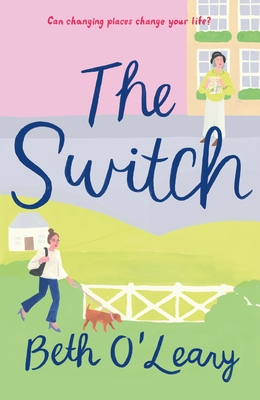

 I absolutely adored this book and this was exactly the kind of heartwarming and endearing read as I'd thought it to be! Leena Cotton is in her 20's, tired of her life in the corporate world, and Eileen Cotton is in her late 70's yearning for a tinge of adventure back in her life! It only seemed convenient to take a sabbatical and switch places, Leena to live in rural Yorkshire and Eileen to taste a bit of the London rush. Leena is thoroughly a chaotic mess after her recent blow up at her office during her big presentation which forced her to take on a sabbatical for a period of two months to get herself together. This book maintains a weirdly familiar Gilmore-Girls-small-town vibe to it which I cherished dearly AND has a Luke-like, but less grumpy, character, Jackson, a primary school teacher who's been extremely friendly and helpful to Leena whenever she needs it, just like how Luke is to Lorelie! Meanwhile, Eileen's been having the time of her life, finally dating someone who isn't her worthless husband!
More than finding peace and confiding in each other when life gets hard, this book is about healing; emphasizing how grief can turn people against themselves and each other when that is exactly what'll help them the most. The Cotton women have been grieving the loss of Carla, Leena's sister, and Eileen's granddaughter, and it had started taking a toll on their lives. It was indeed refreshing to see the two headstrong women grow out of their grief and confront their buried feelings. I initially had the impression that this would be more romance centered than on familial relationships but I'm glad it isn't, else this wouldn't hold a special place in my heart as it does now. The audiobook narration was beautifully done and listening to them, especially Eileen calmed my soul!
Parvathy Sajeev 2020 © Copyright